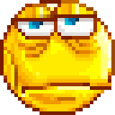
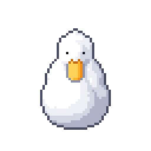
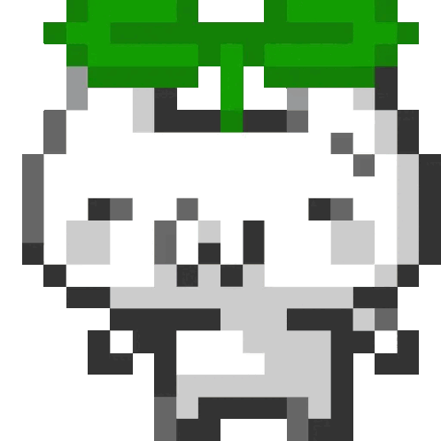
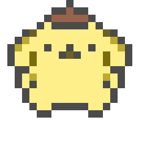
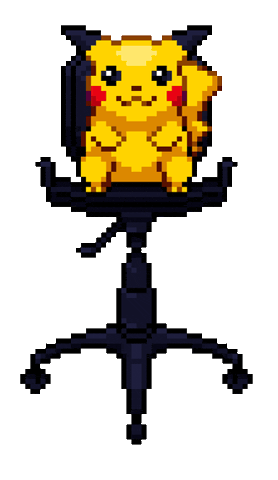
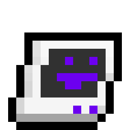
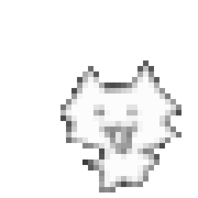
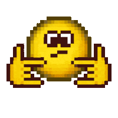
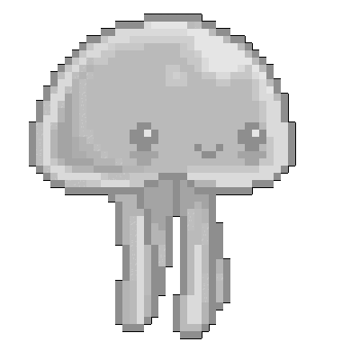
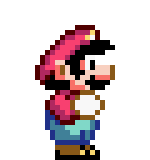

Poziom I
Mapa 1: Dolina
Długa trasa z zakrętami i wieloma miejscami budowy.
Długa trasa z zakrętami i wieloma miejscami budowy.
Średnia mapa z kilkoma zakrętami.
Krótka i prosta mapa.
Nieskończona mapa z rosnącym poziomem trudności.
| # | Gracz | Mapa | Punkty |
|---|
Chroń bazę przed 15 falami (lub bez limitu w trybie Endless). Kliknij dowolne pole na mapie, aby postawić lub ulepszyć wieżę. Jednostki naziemne podążają drogą, natomiast latające lecą w linii prostej prosto do bazy.










Podsumowanie rozgrywki